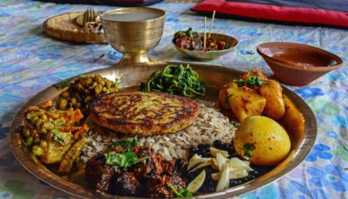
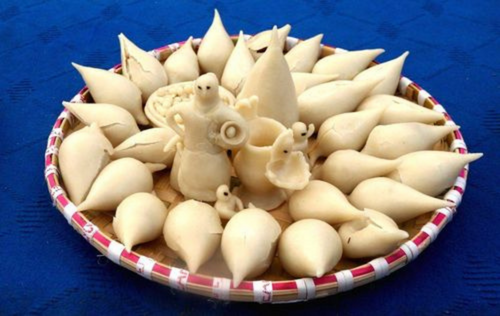

Festivals
Festival holds a unique significance role in Newari Cuisines, they are celebrated with belief and happiness. celebrations are incomplete without a sumptuous feast, and Newari culture is renowned for its festive fervor.Dazzling array of flavors and textures that mirrored the diversity of Nepal's landscape. Newari cuisine is a true reflection of the vibrant culture and heritage of the Kathmandu Valley. With its fusion of flavors, traditional cooking techniques, and festive feasts, it continues to enthrall both locals and visitors alike. Indulging in the gastronomic delights of Newari cuisine is an essential part of experiencing the rich tapestry of this unique culture. Exploring the diverse range of Newari delicacies is a gastronomic adventure that showcases the community's culinary artistry. I would like to mention some festivals which traced the origins of cuisines.
Kuchi Bhoye

Newars celebrate ‘kucchi bhoye in Dashain. This festival is celebrated by preparing,their signature style of native dispersity’s a grand feast that brings the family together in chatter, laughter, and fun. All family members gather at the home of the oldest members and enjoy feast by sitting together. Several dishes are served on a banana leaf 10 t0 20 veg and nonveg dishes are served.
Mohni

Mohni is a festival of love, homecoming, positivity, and pomp. The celebrations end on an optimistic note among the locals that henceforth positively improvetheir lives with feasts and Devotees believe in having been abundantly blessed by the Goddess Durga and thus consider the next year to be a smooth, happy, and prosperous one.This is the most waited moment for all. Bhoj is an integral part of the Newari community.So, special feasts are prepared and enjoyed.
Mha Puja

Mha Puja is an annual ritual performed by the Newari people of Nepal to celebrate one’s essence and to cleanse and empower the soul. The day is also celebrated as Nepal Sambat or the Newari New Year. The celebrations invoke prosperity and longevity for the participant. This ritual starts with drawing a circular diagram called a] mandala on the ground for every single member of the family, whereas two extra mandals are drown for messages of death. After offering prayers to the mandalas along with ritual food, flowers, incense, scared thread in front of mandalas and celebrates the festival with hope and positivity. It is believed that eight types of food items signifying eight goddesses who are considered as protectors of our souls.
Yomari Puni

It is the festival of Newars that marks the end of the rice harvesting season.It falls in the month of November/December during the full moon day of Thinla. A special newari food called 'Yomari'is prepared.This festival is celebrated gloriously by organizing fairs in cities of Newars. Women wear 'Haku Patasi' and prepare yomari ,eat,share and enjoy.